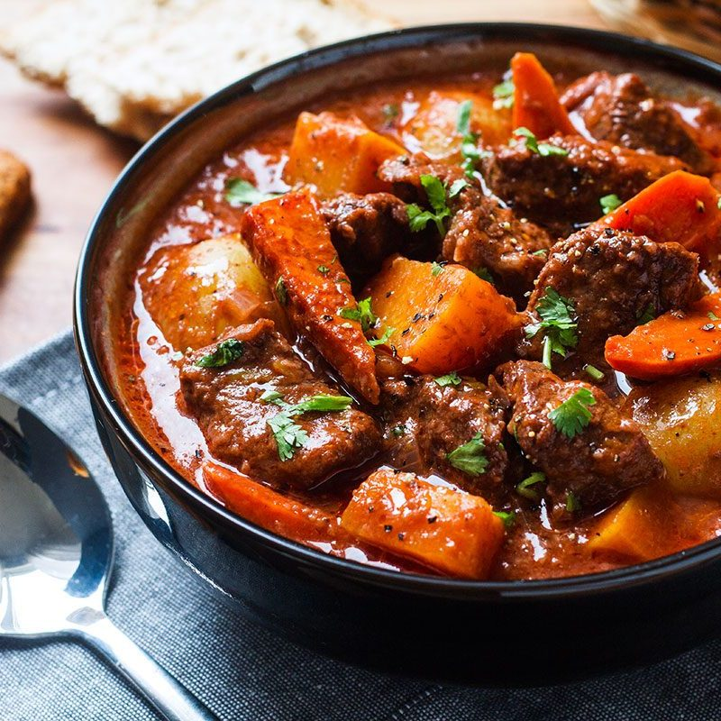

Beef Stew with Carrots & Potatoes

Description
A slightly more involved recipe, this classic beef stew is perfect for those chilly winter days. A long cook in
the oven makes the sauce rich and the meat tender.
Ingredients
- 3 pounds beef chunk, cut into 1 1/2 inch pieces
- 2 tsp salt
- 1 tsp freshly ground black pepper
- 3 tbsp olive oil
- 2 yellow onions, cut into 1 inch chunks
- 7 cloves garlic, pressed
- 2 tbsp balsamic vinegar
- 1 1/2 tbsp tomato paste
- 1/4 cup all purpose flour
- 2 cups dry red wine
- 2 cups beef broth
- 2 cups water
- 1 bay leaf
- 1/2 tsp dried thyme
- 1 1/2 tsp sugar
- 4 large carrots, peeled and cut into 1 inch chunks
- 1 pound small white potatoes, cut in half
- Fresh chopped parsley, for serving
Steps
- Preheat the oven to 325°F and set a rack in the lower middle position.
- Pat the beef dry and season with the salt and pepper. In a large Dutch oven or heavy soup pot, heat 1
tablespoon of the olive oil over medium-high heat until hot and shimmering. Brown the meat in 3 batches,
turning with tongs, for about 5 minutes per batch; add one tablespoon more oil for each batch. (To sear the
meat properly, do not crowd the pan and let the meat develop a nice brown crust before turning with tongs.)
Transfer the meat to a large plate and set aside.
- Add the onions, garlic and balsamic vinegar; cook, stirring with a wooden spoon and scraping the brown bits
from bottom of the pan, for about 5 minutes. Add the tomato paste and cook for a minute more. Add the beef
with its juices back to the pan and sprinkle with the flour. Stir with wooden spoon until the flour is
dissolved, 1 to 2 minutes. Add the wine, beef broth, water, bay leaf, thyme, and sugar. Stir with a wooden
spoon to loosen any brown bits from the bottom of the pan and bring to a boil. Cover the pot with a lid,
transfer to the preheated oven, and braise for 2 hours.
- Remove the pot from the oven and add the carrots and potatoes. Cover and place back in oven for about an
hour more, or until the vegetables are cooked, the broth is thickened, and the meat is tender. Fish out the
bay leaf and discard, then taste and adjust seasoning, if necessary. Serve the stew warm -- or let it come
to room temperature and then store in the refrigerator overnight or until ready to serve. This stew improves
in flavor if made at least 1 day ahead. Reheat, covered, over medium heat or in a 350°F oven. Garnish with
fresh parsley, if desired.
- Enjoy.